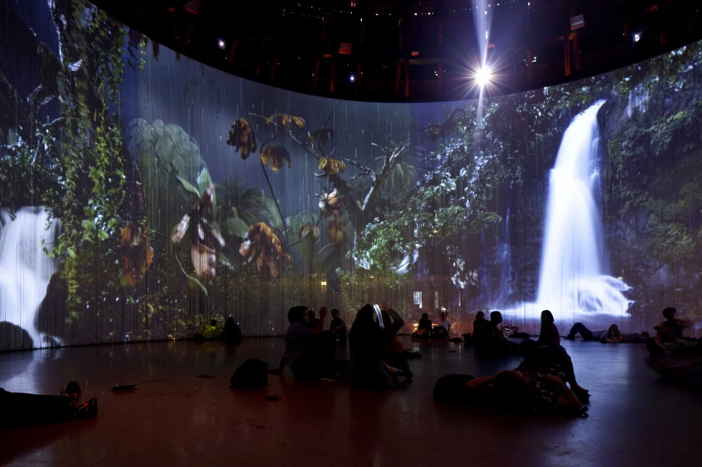
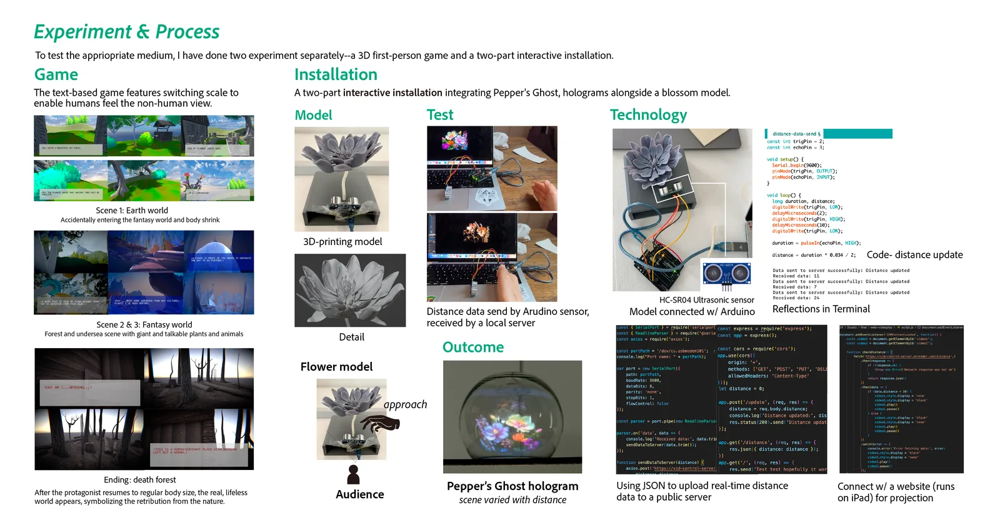
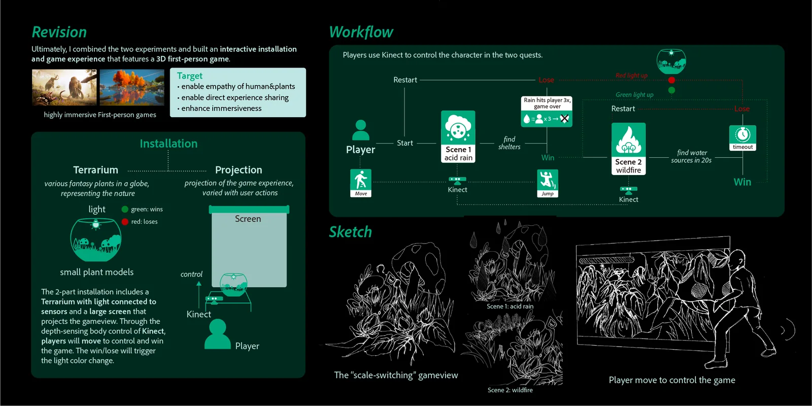
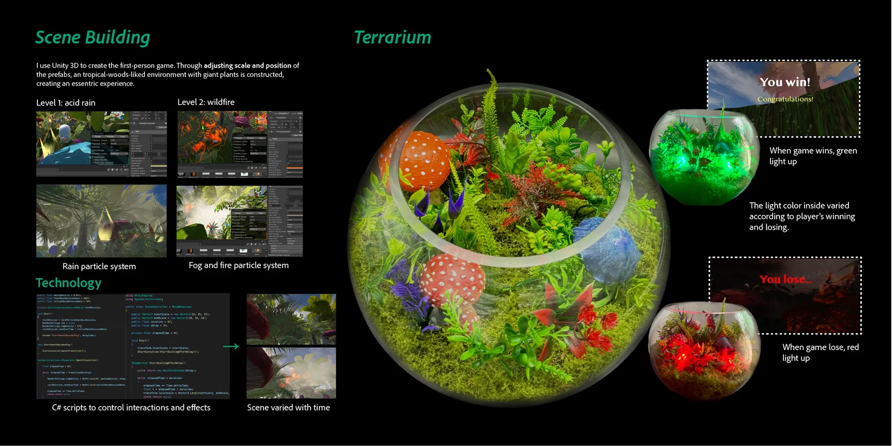
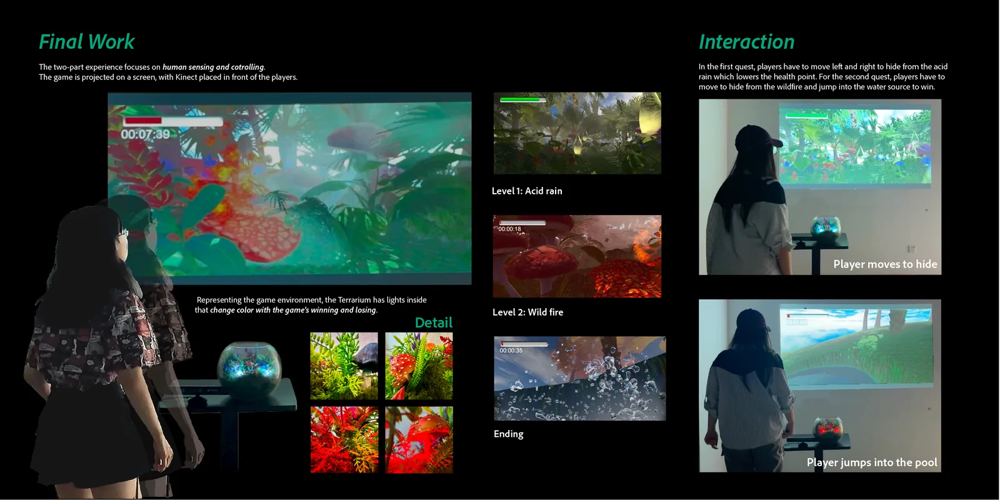

Otherworld
A digital reflection on the fragile boundary between urban life and nature.
Otherworld explores how urbanization accelerates industrialization, impacting the very nature we rely on but often ignore. Through a scale-shifting digital experience, it challenges the human-centric view of our ecosystem.

01. Genesis
The Wilting Reality
The project sparked from a simple, domestic observation: returning home to wilted plants. This fragility mirrored a larger crisis.
Inspired by Mat Collishaw's "Sodid Earth," which projects toxic, mutant flowers, I began to question the unseen consequences of our urban existence.

Inspiration: "Sodid Earth" by Mat Collishaw
A Continuous Process
The relationship between human progress and natural decline isn't new; it's a historical acceleration.
Industrialization
Shift from organic, agricultural rhythms to mechanized manufacturing. The beginning of the separation.
Urbanization
Massive population shifts to cities. Infrastructure replaces ecosystems. Nature becomes "managed."
Information Age
Digital abstraction. We consume images of nature while the physical reality degrades.
02. The Cost
Urban Impact
Our demand for higher living standards drives a cycle of exploitation. The "urban" cannot exist without extracting from the "wild."
Extraction
- Resource exploitation
- Climate acceleration
- Pollution & waste
Deforestation
- Soil destabilization
- Ecosystem collapse
- Greenhouse gases
Habitat Loss
- Species extinction
- Biodiversity decline
- Water cycle disruption
03. Process
Testing the Medium
To find the appropriate medium for this narrative, I experimented with two distinct approaches: a 3D first-person game and a physical interactive installation.
Game Approach
- Fantasy aesthetic & freedom
- Allows drastic scale-switching
- Workflow is too linear/long
- Screen lacks physical immersion
Installation Approach
- Direct physical interaction
- Projection creates shared space
- Abstract concept risks clarity
- 3D printing felt too static

04. Blueprint
System Architecture
The final installation combines the strengths of both experiments. Using Kinect sensors, the physical presence of the viewer directly influences the digital environment.

05. Outcome

